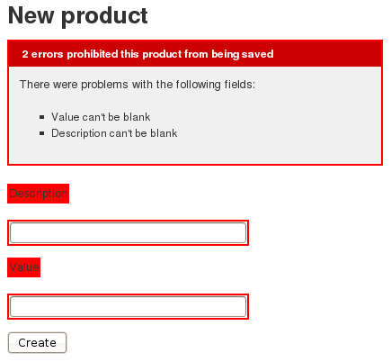
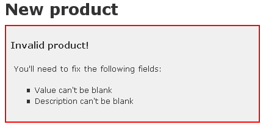
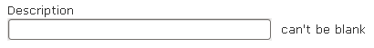

1 객체 생명 주기
레일즈 어플리케이션 실행중에, 객체는 만들어지고, 갱신되고, 삭제 됩니다. 엑티브 레코드는 이러한 객체 생명 주기내에서 가로채기(hook)를 제공합니다. 그래서 여러분은 어플리케이션과 데이터를 조종할 수 있습니다.
데이터 검증은 데이터베이스에 오직 유효만 데이터의 입력을 보장합니다. 콜백과 옵저버는 객체의 상태 변화 전/후에 로직을 실행하도록 허락합니다.
2 데이터 검증 둘러보기
레일즈의 데이터 검증을 자세히 알아보기전에, 여러분은 큰 그림 속에서 어떻게 데이터 검증이 수행되는지 이해해야 합니다.
2.1 왜 데이터 검증을 사용하는가?
데이터 검증은 오직 유효한 데이터만 데이터베이스에 들어가는 것을 보장합니다. 예를들어, 모든 회원들이 유효한 이메일 주소와 편지 주소를 입력해야 하는 것은 어플리케이션에 중요한 점이 될 수 있습니다.
여기 데이터베이스에 데이터를 저장하기 전에 데이터 검증을 하는 몇가지 방법이 있습니다. (데이터베이스 고유의 제약사항, 클라이언트 측에서 데이터 검증, 컨트롤러 수준의 데이터 검증, 그리고 모델 수준의 데이터 검증을 포함합니다.)
- 데이터베이스 제약사항과 (혹은) 저장 프로시저(stored proceture)는 데이터베이스 의존적인 데이터 검증 방법입니다. 그리고 이는 테스트하고 관리하기 좀 더 어렵습니다. 그럼에도, 여러분의 데이터베이스를 다른 어플리케이션이 사용한다면, 데이터베이스 수준의 몇몇 제약 사항을 사용하는 건 좋은 생각입니다. 추가로, 데이터베이스 수준 데이터 검증은 다른 방법으로 구현하기 어려울 수 있는 몇가지 것(가령, 자주 사용되는 테이블에서 유일성 검증 따위)를 안전하게 다룰 수 있습니다.
- 클라이언트 측 데이터 검증은 유용할 수 있습니다. 그러나 이것만 사용하면, 일반적으로 믿기 힘듭니다. 만약 자바스크립을 이용해서 구현했다면, 자바스크립트가 꺼져있는 사용자 브라우저 경우에 검사를 우회할 수 있습니다. 그럼에도, 다른 기술들과 함께 사용하면, 클라이언트 측 데이터 검증은 여러분의 사이트에서 즉각적인 피드백을 사용자들에게 줄 수 있어서 사용자에게 편리함을 제공할 수 있습니다.
- 컨트롤러 수준의 데이터 검증은 마음을 끕니다. 그러나 자주 테스트나 유지 보수를 하기 어렵게 만듭니다. 가능하면, 컨트롤러 가볍게 유지하기 가 좋은 생각입니다. 장기간에 걸처 작업을 할때 이런 습관은 여러분의 어플리케이션을 제작을 더 편하게 만들 겁니다.
- 모델 수준의 데이터 검증은 데이터베이스에 유효한 데이터만 입력하는 가장 좋은 방법입니다. 이 데이터 검증은 데이터베이스를 신뢰하지 않습니다. 그리고 최종 고객이 우회해서 접근할 수 있는 기회도 제공하지 않습니다. 그리고 테스트와 유지보스에 편리합니다. 레일즈는 공통적인 요구 사항에 대한 내장된 헬퍼를 제공하고, 맞춤형 데이터 검증 제작을 손쉽게 할수 있도록 지원합니다.
2.2 데이터 검증은 언제하나?
엑티브 레코드 객체는 두 종류가 있습니다.:데이터베이스의 한열(row)와 대응하는 것과, 그렇지 않은 것이죠. 새로운 객체를 만들때, 예컨데 new 메소드를 이용해서, 이 객체는 아직 데이터베이스와 대응하지 않습니다. 한번이라도 해당 객체에 대해서 save를 호출하면 그것은 정확한 데이터메이스 테이블에 저장 됩니다. 엑티브 레코드는 new_record? 인스턴스 메소드르 사용해서 해당 객체가 데이터베이스에 연결되었는지를 알 수 있습니다. 다음의 간단한 엑티브 레코드 클래스를 생각해보세요.:
class Person < ActiveRecord::Base end
이것이 어떻게 동작하는지는, 몇가지 rails console 결과 관찰로 알 수 있습니다.:
>> p = Person.new(:name => "John Doe") => #<Person id: nil, name: "John Doe", created_at: nil, :updated_at: nil> >> p.new_record? => true >> p.save => true >> p.new_record? => false
새로운 레코드 만들기와 저장하기는 데이터베이스에 INSERT SQL 명령을 전달할 것입니다. 존재하는 레코드 정보 갱신은 UPDATE SQL 명령어를 전달합니다. 데이터 검증은 보통 데이터베이스에 이런 명령어를 전달되지 전에 실행 됩니다. 만약에 데이터 검증이 하나라도 실패하면, 해당 객체는 타당하지 않은 객체로 기록되고, 엑티브 레코드는 INSERT나 UPDATE 명령을 실행하지 않습니다. 이는 데이터베이스에 타당하지 않은 객체 저장 방지를 돕습니다. 여러분은 객체가 만들어때, 저장될때, 갱신될때 확인할 데이터 검증 규칙을 지정할 수 있습니다.
데이터베이스 안에서 객체의 상태를 바꾸는 방법은 많습니다. 몇가지 메소드는 데이터 검증을 실행하지만, 몇몇은 그렇지 않겠죠. 이는 여러분이 주의 깊지 못하면, 잘못된 상태로 데이터베이스에 객체를 저장할 가능성이 있다는 것을 의미합니다.
다음은 메소드는 데이터 검증을 실행시킵니다. 그리고 객체가 유효할때만 데이터베이스에 저장합니다.:
- create
- create!
- save
- save!
- update
- update_attributes
- update_attributes!
bang(빵!) 버전(e.g save!)은 객체가 타당하지 않으면 예외를 발생 시킵니다. non-bang 버전은 발생 시키지 않습니다.:save와 update와 update_attributes는 false를 반환하고, create와 update는 그냥 객체를 반환합니다.
2.3 데이터 검증 무시하기
다음 메소드는 데이터 검증을 하지 않습니다. 그리고 데이터의 타당성에 개의치 않고 객체를 데이터베이스에 저장합니다. 이 메소드는 주의 깊게 사용해야 합니다.
- decrement!
- decrement_counter
- increment!
- increment_counter
- toggle!
- update_all
- update_attribute
- update_counters
save 역시 :validate => false를 인자로 넘기면 데이터 검증을 하지 않습니다. 이 기법은 신중하게 사용하세요.
- save(:validate => false)
2.4 valid? 와 invalid?
객체의 유효 여부를 검사하기 위해 레일즈는 valid? 메소드를 사용합니다. 여러분도 이 메소드를 사용할 수 있습니다. valid?는 데이터 검증을 실행하고 아무런 에러가 없으면 true(참)을 그렇지 않으면 false(거짓)을 반환합니다.
class Person < ActiveRecord::Base validates :name, :presence => true end Person.create(:name => "John Doe").valid? # => true Person.create(:name => nil).valid? # => false
엑티브 레코드가 데이터 검증을 수행 중일때, errors 인스턴스 메소드를 통해서 발견된 어떤 에러든지 접근할 수 있습니다. 기본적으로, 데이터 검증을 실행한 후에 errors 인스턴스 메소드가 반환한 컬렉션 객체가 비어 있으면, 객체는 유효합니다.
new로 생성된 객체는 기술적으로 유효하지 않은 정보를 담고 있더라도, 에러를 보고하지 않는 다는 점에 유의하세요. 데이터 검증은 new를 사용중에 동작하지 않기 때문입니다.
class Person < ActiveRecord::Base
validates :name, :presence => true
end
>> p = Person.new
=> #<Person id: nil, name: nil>
>> p.errors
=> {}
>> p.valid?
=> false
>> p.errors
=> {:name=>["can't be blank"]}
>> p = Person.create
=> #<Person id: nil, name: nil>
>> p.errors
=> {:name=>["can't be blank"]}
>> p.save
=> false
>> p.save!
=> ActiveRecord::RecordInvalid: Validation failed: Name can't be blank
>> Person.create!
=> ActiveRecord::RecordInvalid: Validation failed: Name can't be blank
invalid?는 간단히 valid?의 반대입니다. invalid?는 데이터 검증을 실행하고, 객체에 어떠한 에러라도 추가되면 true(참)을 반환하고 반대면 false(거짓)을 반환합니다.
2.5 errors[]
객체가 가진 특정 속성(attribute)의 타당성 확인을 위해서, errors[:attribute]를 사용할 수 있습니다. 그것은 :attribute을 위한 모든 에러를 가진 배열을 반환합니다. 만약 특정 속성에 대한 에러가 없으면, 비어있는 배열이 반환됩니다.
이 메소드는 오직 데이터 검증 실행 후에만 유용합니다. 왜냐하면, 오직 에러 컬렉션을 조회할 뿐이고 데이터 검증을 실행하지 않기 때문입니다. 그것은 위에 설명한 ActiveRecord::Base#invalid? 메소드와 다릅니다. 왜냐하면, 객체의 타당성 전체를 검사하지는 않기 때문이죠. 그것은 오직 객체의 개발 속성에 대한 에러가 존재하는지 여부만 살핍니다.
class Person < ActiveRecord::Base validates :name, :presence => true end >> Person.new.errors[:name].any? # => false >> Person.create.errors[:name].any? # => true
우리는 데이터 검증 에러에 대한 자세한 사항을 데이터 검증 에러로 작업하기 섹션에서 다를 것입니다. 지금은, 레일즈가 제공하는 내장된 데이터 검증 헬퍼로 돌아가죠.
3 데이터 검증 헬퍼 (Validation helpers)
엑티브 레코드는 미리 정의된 많은 데이터 검증 헬퍼를 제공합니다. 이건 클래스 정의 내부에서 직접 사용할 수 있습니다. 이런 헬퍼는 공통의 데이터 검증 규칙을 제공합니다. 매번 검증이 실패할때, 한 에러 메세지가 해당 객체의 errors 컬렉션에 추가되고, 이 메세지는 검증 대상의 필드와 관련있습니다.
각 헬퍼는 속성을 원하는 숫자 만큼 받아들입니다. 그래서 같은 종류의 검증에 여러개의 속성을 한줄로 추가할 수 있습니다.
모든 헬퍼는 :on과 :message 옵션을 받을 수 있습니다. :message 옵션은 검증이 실행되고 실패일 경우에 errors 컬렉션에 추가될 메세지를 지정할 수 있습니다. :on 옵션은 :save(기본값), :create 또는 :update 어느 시점의 값을 검사할 것인지 지정합니다. 데이터 검증 헬퍼 각 메소드는 기본 에러 메세지 값을 가지고 있습니다. 기본 메세지는 :message가 지정되지 않았을때 사용됩니다. 자, 사용할 수 있는 헬퍼들을 하나씩 살펴봅시다.
3.1 validates_acceptance_of (수락 검증)
폼이 실행된 후에, 유저 인터페이스 상에서 체크되어 있는 체크박스를 검증합니다. 이것은 보통 사용자가 여러분의 어플리케이션의 서비스 계약 사항의 동의 확인이 필요할때, 어떤 텍스트를 읽었는지 확인하거나 그 비슷한 상황에서 사용됩니다. 이 검증은 웹 어플리케이션에 매우 특화되어 있는 것이고, 이 수락(acceptance)은 데이터베이스 내에 어떤 곳에도 구지 기록될 필요는 없습니다.(만약 이를 위한 필드를 만들어 놓지 않으면, 이 헬퍼는 가상의 속성을 만듭니다.)
class Person < ActiveRecord::Base validates_acceptance_of :terms_of_service end
validates_acceptance_of의 기본 에러 메세지는 “must be accepted” 입니다.
validates_acceptance_of can receive an :accept option, which determines the value that will be considered acceptance. It defaults to “1”, but you can change this.
class Person < ActiveRecord::Base validates_acceptance_of :terms_of_service, :accept => 'yes' end
3.2 validates_associated
You should use this helper when your model has associations with other models and they also need to be validated. When you try to save your object, valid? will be called upon each one of the associated objects.
class Library < ActiveRecord::Base has_many :books validates_associated :books end
This validation will work with all of the association types.
Don’t use validates_associated on both ends of your associations. They would call each other in an infinite loop.
The default error message for validates_associated is “is invalid”. Note that each associated object will contain its own errors collection; errors do not bubble up to the calling model.
3.3 validates_confirmation_of
You should use this helper when you have two text fields that should receive exactly the same content. For example, you may want to confirm an email address or a password. This validation creates a virtual attribute whose name is the name of the field that has to be confirmed with “_confirmation” appended.
class Person < ActiveRecord::Base validates_confirmation_of :email end
In your view template you could use something like
<%= text_field :person, :email %> <%= text_field :person, :email_confirmation %>
This check is performed only if email_confirmation is not nil. To require confirmation, make sure to add a presence check for the confirmation attribute (we’ll take a look at validates_presence_of later on this guide):
class Person < ActiveRecord::Base validates_confirmation_of :email validates_presence_of :email_confirmation end
The default error message for validates_confirmation_of is “doesn’t match confirmation”.
3.4 validates_exclusion_of
This helper validates that the attributes’ values are not included in a given set. In fact, this set can be any enumerable object.
class Account < ActiveRecord::Base
validates_exclusion_of :subdomain, :in => %w(www us ca jp),
:message => "Subdomain %{value} is reserved."
end
The validates_exclusion_of helper has an option :in that receives the set of values that will not be accepted for the validated attributes. The :in option has an alias called :within that you can use for the same purpose, if you’d like to. This example uses the :message option to show how you can include the attribute’s value.
The default error message for validates_exclusion_of is “is reserved”.
3.5 validates_format_of
This helper validates the attributes’ values by testing whether they match a given regular expression, which is specified using the :with option.
class Product < ActiveRecord::Base
validates_format_of :legacy_code, :with => /\A[a-zA-Z]+\z/,
:message => "Only letters allowed"
end
The default error message for validates_format_of is “is invalid”.
3.6 validates_inclusion_of
This helper validates that the attributes’ values are included in a given set. In fact, this set can be any enumerable object.
class Coffee < ActiveRecord::Base
validates_inclusion_of :size, :in => %w(small medium large),
:message => "%{value} is not a valid size"
end
The validates_inclusion_of helper has an option :in that receives the set of values that will be accepted. The :in option has an alias called :within that you can use for the same purpose, if you’d like to. The previous example uses the :message option to show how you can include the attribute’s value.
The default error message for validates_inclusion_of is “is not included in the list”.
3.7 validates_length_of
This helper validates the length of the attributes’ values. It provides a variety of options, so you can specify length constraints in different ways:
class Person < ActiveRecord::Base validates_length_of :name, :minimum => 2 validates_length_of :bio, :maximum => 500 validates_length_of :password, :in => 6..20 validates_length_of :registration_number, :is => 6 end
The possible length constraint options are:
- :minimum – The attribute cannot have less than the specified length.
- :maximum – The attribute cannot have more than the specified length.
- :in (or :within) – The attribute length must be included in a given interval. The value for this option must be a range.
- :is – The attribute length must be equal to the given value.
The default error messages depend on the type of length validation being performed. You can personalize these messages using the :wrong_length, :too_long, and :too_short options and %{count} as a placeholder for the number corresponding to the length constraint being used. You can still use the :message option to specify an error message.
class Person < ActiveRecord::Base
validates_length_of :bio, :maximum => 1000,
:too_long => "%{count} characters is the maximum allowed"
end
This helper counts characters by default, but you can split the value in a different way using the :tokenizer option:
class Essay < ActiveRecord::Base
validates_length_of :content,
:minimum => 300,
:maximum => 400,
:tokenizer => lambda { |str| str.scan(/\w+/) },
:too_short => "must have at least %{count} words",
:too_long => "must have at most %{count} words"
end
The validates_size_of helper is an alias for validates_length_of.
3.8 validates_numericality_of
This helper validates that your attributes have only numeric values. By default, it will match an optional sign followed by an integral or floating point number. To specify that only integral numbers are allowed set :only_integer to true.
If you set :only_integer to true, then it will use the
/\A[+-]?\d+\Z/
regular expression to validate the attribute’s value. Otherwise, it will try to convert the value to a number using Float.
Note that the regular expression above allows a trailing newline character.
class Player < ActiveRecord::Base validates_numericality_of :points validates_numericality_of :games_played, :only_integer => true end
Besides :only_integer, the validates_numericality_of helper also accepts the following options to add constraints to acceptable values:
- :greater_than – Specifies the value must be greater than the supplied value. The default error message for this option is “must be greater than %{count}”.
- :greater_than_or_equal_to – Specifies the value must be greater than or equal to the supplied value. The default error message for this option is “must be greater than or equal to %{count}”.
- :equal_to – Specifies the value must be equal to the supplied value. The default error message for this option is “must be equal to %{count}”.
- :less_than – Specifies the value must be less than the supplied value. The default error message for this option is “must be less than %{count}”.
- :less_than_or_equal_to – Specifies the value must be less than or equal the supplied value. The default error message for this option is “must be less than or equal to %{count}”.
- :odd – Specifies the value must be an odd number if set to true. The default error message for this option is “must be odd”.
- :even – Specifies the value must be an even number if set to true. The default error message for this option is “must be even”.
The default error message for validates_numericality_of is “is not a number”.
3.9 validates_presence_of
This helper validates that the specified attributes are not empty. It uses the blank? method to check if the value is either nil or a blank string, that is, a string that is either empty or consists of whitespace.
class Person < ActiveRecord::Base validates :name, :login, :email, :presence => true end
If you want to be sure that an association is present, you’ll need to test whether the foreign key used to map the association is present, and not the associated object itself.
class LineItem < ActiveRecord::Base belongs_to :order validates_presence_of :order_id end
Since false.blank? is true, if you want to validate the presence of a boolean field you should use validates_inclusion_of :field_name, :in => [true, false].
The default error message for validates_presence_of is “can’t be empty”.
3.10 validates_uniqueness_of
This helper validates that the attribute’s value is unique right before the object gets saved. It does not create a uniqueness constraint in the database, so it may happen that two different database connections create two records with the same value for a column that you intend to be unique. To avoid that, you must create a unique index in your database.
class Account < ActiveRecord::Base validates_uniqueness_of :email end
The validation happens by performing an SQL query into the model’s table, searching for an existing record with the same value in that attribute.
There is a :scope option that you can use to specify other attributes that are used to limit the uniqueness check:
class Holiday < ActiveRecord::Base
validates_uniqueness_of :name, :scope => :year,
:message => "should happen once per year"
end
There is also a :case_sensitive option that you can use to define whether the uniqueness constraint will be case sensitive or not. This option defaults to true.
class Person < ActiveRecord::Base validates_uniqueness_of :name, :case_sensitive => false end
Note that some databases are configured to perform case-insensitive searches anyway.
The default error message for validates_uniqueness_of is “has already been taken”.
3.11 validates_with
This helper passes the record to a separate class for validation.
class Person < ActiveRecord::Base
validates_with GoodnessValidator
end
class GoodnessValidator < ActiveModel::Validator
def validate
if record.first_name == "Evil"
record.errors[:base] << "This person is evil"
end
end
end
The validates_with helper takes a class, or a list of classes to use for validation. There is no default error message for validates_with. You must manually add errors to the record’s errors collection in the validator class.
The validator class has two attributes by default:
- record – the record to be validated
- options – the extra options that were passed to validates_with
Like all other validations, validates_with takes the :if, :unless and :on options. If you pass any other options, it will send those options to the validator class as options:
class Person < ActiveRecord::Base
validates_with GoodnessValidator, :fields => [:first_name, :last_name]
end
class GoodnessValidator < ActiveRecord::Validator
def validate
if options[:fields].any?{|field| record.send(field) == "Evil" }
record.errors[:base] << "This person is evil"
end
end
end
3.12 validates_each
This helper validates attributes against a block. It doesn’t have a predefined validation function. You should create one using a block, and every attribute passed to validates_each will be tested against it. In the following example, we don’t want names and surnames to begin with lower case.
class Person < ActiveRecord::Base
validates_each :name, :surname do |model, attr, value|
model.errors.add(attr, 'must start with upper case') if value =~ /\A[a-z]/
end
end
The block receives the model, the attribute’s name and the attribute’s value. You can do anything you like to check for valid data within the block. If your validation fails, you can add an error message to the model, therefore making it invalid.
4 Common Validation Options
There are some common options that all the validation helpers can use. Here they are, except for the :if and :unless options, which are discussed later in Conditional Validation.
4.1 :allow_nil
The :allow_nil option skips the validation when the value being validated is nil. Using :allow_nil with validates_presence_of allows for nil, but any other blank? value will still be rejected.
class Coffee < ActiveRecord::Base
validates_inclusion_of :size, :in => %w(small medium large),
:message => "%{value} is not a valid size", :allow_nil => true
end
4.2 :allow_blank
The :allow_blank option is similar to the :allow_nil option. This option will let validation pass if the attribute’s value is blank?, like nil or an empty string for example.
class Topic < ActiveRecord::Base
validates_length_of :title, :is => 5, :allow_blank => true
end
Topic.create("title" => "").valid? # => true
Topic.create("title" => nil).valid? # => true
4.3 :message
As you’ve already seen, the :message option lets you specify the message that will be added to the errors collection when validation fails. When this option is not used, Active Record will use the respective default error message for each validation helper.
4.4 :on
The :on option lets you specify when the validation should happen. The default behavior for all the built-in validation helpers is to be run on save (both when you’re creating a new record and when you’re updating it). If you want to change it, you can use :on => :create to run the validation only when a new record is created or :on => :update to run the validation only when a record is updated.
class Person < ActiveRecord::Base # it will be possible to update email with a duplicated value validates_uniqueness_of :email, :on => :create # it will be possible to create the record with a non-numerical age validates_numericality_of :age, :on => :update # the default (validates on both create and update) validates :name, :presence => true, :on => :save end
5 Conditional Validation
Sometimes it will make sense to validate an object just when a given predicate is satisfied. You can do that by using the :if and :unless options, which can take a symbol, a string or a Proc. You may use the :if option when you want to specify when the validation should happen. If you want to specify when the validation should not happen, then you may use the :unless option.
5.1 Using a Symbol with :if and :unless
You can associate the :if and :unless options with a symbol corresponding to the name of a method that will get called right before validation happens. This is the most commonly used option.
class Order < ActiveRecord::Base
validates_presence_of :card_number, :if => :paid_with_card?
def paid_with_card?
payment_type == "card"
end
end
5.2 Using a String with :if and :unless
You can also use a string that will be evaluated using eval and needs to contain valid Ruby code. You should use this option only when the string represents a really short condition.
class Person < ActiveRecord::Base validates_presence_of :surname, :if => "name.nil?" end
5.3 Using a Proc with :if and :unless
Finally, it’s possible to associate :if and :unless with a Proc object which will be called. Using a Proc object gives you the ability to write an inline condition instead of a separate method. This option is best suited for one-liners.
class Account < ActiveRecord::Base
validates_confirmation_of :password,
:unless => Proc.new { |a| a.password.blank? }
end
6 Creating Custom Validation Methods
When the built-in validation helpers are not enough for your needs, you can write your own validation methods.
Simply create methods that verify the state of your models and add messages to the errors collection when they are invalid. You must then register these methods by using one or more of the validate, validate_on_create or validate_on_update class methods, passing in the symbols for the validation methods’ names.
You can pass more than one symbol for each class method and the respective validations will be run in the same order as they were registered.
class Invoice < ActiveRecord::Base
validate :expiration_date_cannot_be_in_the_past,
:discount_cannot_be_greater_than_total_value
def expiration_date_cannot_be_in_the_past
errors.add(:expiration_date, "can't be in the past") if
!expiration_date.blank? and expiration_date < Date.today
end
def discount_cannot_be_greater_than_total_value
errors.add(:discount, "can't be greater than total value") if
discount > total_value
end
end
You can even create your own validation helpers and reuse them in several different models. For example, an application that manages surveys may find it useful to express that a certain field corresponds to a set of choices:
ActiveRecord::Base.class_eval do
def self.validates_as_choice(attr_name, n, options={})
validates_inclusion_of attr_name, {:in => 1..n}.merge(options)
end
end
Simply reopen ActiveRecord::Base and define a class method like that. You’d typically put this code somewhere in config/initializers. You can use this helper like this:
class Movie < ActiveRecord::Base validates_as_choice :rating, 5 end
7 데이터 검증 에러로 작업하기
In addition to the valid? and invalid? methods covered earlier, Rails provides a number of methods for working with the errors collection and inquiring about the validity of objects.
The following is a list of the most commonly used methods. Please refer to the ActiveRecord::Errors documentation for a list of all the available methods.
7.1 errors
Returns an OrderedHash with all errors. Each key is the attribute name and the value is an array of strings with all errors.
class Person < ActiveRecord::Base
validates :name, :presence => true
validates_length_of :name, :minimum => 3
end
person = Person.new
person.valid? # => false
person.errors
# => {:name => ["can't be blank", "is too short (minimum is 3 characters)"]}
person = Person.new(:name => "John Doe")
person.valid? # => true
person.errors # => []
7.2 errors[]
errors[] is used when you want to check the error messages for a specific attribute. It returns an array of strings with all error messages for the given attribute, each string with one error message. If there are no errors related to the attribute, it returns an empty array.
class Person < ActiveRecord::Base validates :name, :presence => true validates_length_of :name, :minimum => 3 end person = Person.new(:name => "John Doe") person.valid? # => true person.errors[:name] # => [] person = Person.new(:name => "JD") person.valid? # => false person.errors[:name] # => ["is too short (minimum is 3 characters)"] person = Person.new person.valid? # => false person.errors[:name] # => ["can't be blank", "is too short (minimum is 3 characters)"]
7.3 errors.add
The add method lets you manually add messages that are related to particular attributes. You can use the errors.full_messages or errors.to_a methods to view the messages in the form they might be displayed to a user. Those particular messages get the attribute name prepended (and capitalized). add receives the name of the attribute you want to add the message to, and the message itself.
class Person < ActiveRecord::Base
def a_method_used_for_validation_purposes
errors.add(:name, "cannot contain the characters !@#%*()_-+=")
end
end
person = Person.create(:name => "!@#")
person.errors[:name]
# => ["cannot contain the characters !@#%*()_-+="]
person.errors.full_messages
# => ["Name cannot contain the characters !@#%*()_-+="]
Another way to do this is using []= setter
class Person < ActiveRecord::Base
def a_method_used_for_validation_purposes
errors[:name] = "cannot contain the characters !@#%*()_-+="
end
end
person = Person.create(:name => "!@#")
person.errors[:name]
# => ["cannot contain the characters !@#%*()_-+="]
person.errors.to_a
# => ["Name cannot contain the characters !@#%*()_-+="]
7.4 errors[:base]
You can add error messages that are related to the object’s state as a whole, instead of being related to a specific attribute. You can use this method when you want to say that the object is invalid, no matter the values of its attributes. Since errors[:base] is an array, you can simply add a string to the array and uses it as the error message.
class Person < ActiveRecord::Base
def a_method_used_for_validation_purposes
errors[:base] << "This person is invalid because ..."
end
end
7.5 errors.clear
The clear method is used when you intentionally want to clear all the messages in the errors collection. Of course, calling errors.clear upon an invalid object won’t actually make it valid: the errors collection will now be empty, but the next time you call valid? or any method that tries to save this object to the database, the validations will run again. If any of the validations fail, the errors collection will be filled again.
class Person < ActiveRecord::Base validates :name, :presence => true validates_length_of :name, :minimum => 3 end person = Person.new person.valid? # => false person.errors[:name] # => ["can't be blank", "is too short (minimum is 3 characters)"] person.errors.clear person.errors.empty? # => true p.save # => false p.errors[:name] # => ["can't be blank", "is too short (minimum is 3 characters)"]
7.6 errors.size
The size method returns the total number of error messages for the object.
class Person < ActiveRecord::Base validates :name, :presence => true validates_length_of :name, :minimum => 3 validates_presence_of :email end person = Person.new person.valid? # => false person.errors.size # => 3 person = Person.new(:name => "Andrea", :email => "andrea@example.com") person.valid? # => true person.errors.size # => 0
8 Displaying Validation Errors in the View
Rails provides built-in helpers to display the error messages of your models in your view templates.
8.1 error_messages and error_messages_for
When creating a form with the form_for helper, you can use the error_messages method on the form builder to render all failed validation messages for the current model instance.
class Product < ActiveRecord::Base validates_presence_of :description, :value validates_numericality_of :value, :allow_nil => true end
<%= form_for(@product) do |f| %>
<%= f.error_messages %>
<p>
<%= f.label :description %><br />
<%= f.text_field :description %>
</p>
<p>
<%= f.label :value %><br />
<%= f.text_field :value %>
</p>
<p>
<%= f.submit "Create" %>
</p>
<% end %>
To get the idea, if you submit the form with empty fields you typically get this back, though styles are indeed missing by default:

You can also use the error_messages_for helper to display the error messages of a model assigned to a view template. It’s very similar to the previous example and will achieve exactly the same result.
<%= error_messages_for :product %>
The displayed text for each error message will always be formed by the capitalized name of the attribute that holds the error, followed by the error message itself.
Both the form.error_messages and the error_messages_for helpers accept options that let you customize the div element that holds the messages, changing the header text, the message below the header text and the tag used for the element that defines the header.
<%= f.error_messages :header_message => "Invalid product!", :message => "You'll need to fix the following fields:", :header_tag => :h3 %>
Which results in the following content:

If you pass nil to any of these options, it will get rid of the respective section of the div.
8.2 Customizing the Error Messages CSS
The selectors to customize the style of error messages are:
- .field_with_errors – Style for the form fields and labels with errors.
- #errorExplanation – Style for the div element with the error messages.
- #errorExplanation h2 – Style for the header of the div element.
- #errorExplanation p – Style for the paragraph that holds the message that appears right below the header of the div element.
- #errorExplanation ul li – Style for the list items with individual error messages.
Scaffolding for example generates public/stylesheets/scaffold.css, which defines the red-based style you saw above.
The name of the class and the id can be changed with the :class and :id options, accepted by both helpers.
8.3 Customizing the Error Messages HTML
By default, form fields with errors are displayed enclosed by a div element with the field_with_errors CSS class. However, it’s possible to override that.
The way form fields with errors are treated is defined by ActionView::Base.field_error_proc. This is a Proc that receives two parameters:
- A string with the HTML tag
- An instance of ActionView::Helpers::InstanceTag.
Here is a simple example where we change the Rails behaviour to always display the error messages in front of each of the form fields with errors. The error messages will be enclosed by a span element with a validation-error CSS class. There will be no div element enclosing the input element, so we get rid of that red border around the text field. You can use the validation-error CSS class to style it anyway you want.
ActionView::Base.field_error_proc = Proc.new do |html_tag, instance|
if instance.error_message.kind_of?(Array)
%(#{html_tag}<span class="validation-error">
#{instance.error_message.join(',')}</span>).html_safe
else
%(#{html_tag}<span class="validation-error">
#{instance.error_message}</span>).html_safe
end
end
This will result in something like the following:

9 Callbacks Overview
Callbacks are methods that get called at certain moments of an object’s life cycle. With callbacks it’s possible to write code that will run whenever an Active Record object is created, saved, updated, deleted, validated, or loaded from the database.
9.1 Callback Registration
In order to use the available callbacks, you need to register them. You can do that by implementing them as ordinary methods, and then using a macro-style class method to register them as callbacks.
class User < ActiveRecord::Base
validates_presence_of :login, :email
before_validation :ensure_login_has_a_value
protected
def ensure_login_has_a_value
if login.nil?
self.login = email unless email.blank?
end
end
end
The macro-style class methods can also receive a block. Consider using this style if the code inside your block is so short that it fits in just one line.
class User < ActiveRecord::Base
validates_presence_of :login, :email
before_create {|user| user.name = user.login.capitalize
if user.name.blank?}
end
It’s considered good practice to declare callback methods as being protected or private. If left public, they can be called from outside of the model and violate the principle of object encapsulation.
10 Available Callbacks
Here is a list with all the available Active Record callbacks, listed in the same order in which they will get called during the respective operations:
10.1 Creating an Object
- before_validation
- after_validation
- before_save
- after_save
- before_create
- around_create
- after_create
10.2 Updating an Object
- before_validation
- after_validation
- before_save
- after_save
- before_update
- around_update
- after_update
10.3 Destroying an Object
- before_destroy
- after_destroy
- around_destroy
after_save runs both on create and update, but always after the more specific callbacks after_create and after_update, no matter the order in which the macro calls were executed.
10.4 after_initialize and after_find
The after_initialize callback will be called whenever an Active Record object is instantiated, either by directly using new or when a record is loaded from the database. It can be useful to avoid the need to directly override your Active Record initialize method.
The after_find callback will be called whenever Active Record loads a record from the database. after_find is called before after_initialize if both are defined.
The after_initialize and after_find callbacks are a bit different from the others. They have no before_* counterparts, and the only way to register them is by defining them as regular methods. If you try to register after_initialize or after_find using macro-style class methods, they will just be ignored. This behaviour is due to performance reasons, since after_initialize and after_find will both be called for each record found in the database, significantly slowing down the queries.
class User < ActiveRecord::Base
def after_initialize
puts "You have initialized an object!"
end
def after_find
puts "You have found an object!"
end
end
>> User.new
You have initialized an object!
=> #<User id: nil>
>> User.first
You have found an object!
You have initialized an object!
=> #<User id: 1>
11 Running Callbacks
The following methods trigger callbacks:
- create
- create!
- decrement!
- destroy
- destroy_all
- increment!
- save
- save!
- save(false)
- toggle!
- update
- update_attribute
- update_attributes
- update_attributes!
- valid?
Additionally, the after_find callback is triggered by the following finder methods:
- all
- first
- find
- find_all_by_attribute
- find_by_attribute
- find_by_attribute!
- last
The after_initialize callback is triggered every time a new object of the class is initialized.
12 Skipping Callbacks
Just as with validations, it’s also possible to skip callbacks. These methods should be used with caution, however, because important business rules and application logic may be kept in callbacks. Bypassing them without understanding the potential implications may lead to invalid data.
- decrement
- decrement_counter
- delete
- delete_all
- find_by_sql
- increment
- increment_counter
- toggle
- update_all
- update_counters
13 Halting Execution
As you start registering new callbacks for your models, they will be queued for execution. This queue will include all your model’s validations, the registered callbacks, and the database operation to be executed.
The whole callback chain is wrapped in a transaction. If any before callback method returns exactly false or raises an exception the execution chain gets halted and a ROLLBACK is issued; after callbacks can only accomplish that by raising an exception.
Raising an arbitrary exception may break code that expects save and friends not to fail like that. The ActiveRecord::Rollback exception is thought precisely to tell Active Record a rollback is going on. That one is internally captured but not reraised.
14 Relational Callbacks
Callbacks work through model relationships, and can even be defined by them. Let’s take an example where a user has many posts. In our example, a user’s posts should be destroyed if the user is destroyed. So, we’ll add an after_destroy callback to the User model by way of its relationship to the Post model.
class User < ActiveRecord::Base
has_many :posts, :dependent => :destroy
end
class Post < ActiveRecord::Base
after_destroy :log_destroy_action
def log_destroy_action
puts 'Post destroyed'
end
end
>> user = User.first
=> #<User id: 1>
>> user.posts.create!
=> #<Post id: 1, user_id: 1>
>> user.destroy
Post destroyed
=> #<User id: 1>
15 Conditional Callbacks
Like in validations, we can also make our callbacks conditional, calling them only when a given predicate is satisfied. You can do that by using the :if and :unless options, which can take a symbol, a string or a Proc. You may use the :if option when you want to specify when the callback should get called. If you want to specify when the callback should not be called, then you may use the :unless option.
15.1 Using :if and :unless with a Symbol
You can associate the :if and :unless options with a symbol corresponding to the name of a method that will get called right before the callback. When using the :if option, the callback won’t be executed if the method returns false; when using the :unless option, the callback won’t be executed if the method returns true. This is the most common option. Using this form of registration it’s also possible to register several different methods that should be called to check if the callback should be executed.
class Order < ActiveRecord::Base before_save :normalize_card_number, :if => :paid_with_card? end
15.2 Using :if and :unless with a String
You can also use a string that will be evaluated using eval and needs to contain valid Ruby code. You should use this option only when the string represents a really short condition.
class Order < ActiveRecord::Base before_save :normalize_card_number, :if => "paid_with_card?" end
15.3 Using :if and :unless with a Proc
Finally, it’s possible to associate :if and :unless with a Proc object. This option is best suited when writing short validation methods, usually one-liners.
class Order < ActiveRecord::Base
before_save :normalize_card_number,
:if => Proc.new { |order| order.paid_with_card? }
end
15.4 Multiple Conditions for Callbacks
When writing conditional callbacks, it’s possible to mix both :if and :unless in the same callback declaration.
class Comment < ActiveRecord::Base
after_create :send_email_to_author, :if => :author_wants_emails?,
:unless => Proc.new { |comment| comment.post.ignore_comments? }
end
16 Callback Classes
Sometimes the callback methods that you’ll write will be useful enough to be reused by other models. Active Record makes it possible to create classes that encapsulate the callback methods, so it becomes very easy to reuse them.
Here’s an example where we create a class with an after_destroy callback for a PictureFile model.
class PictureFileCallbacks
def after_destroy(picture_file)
File.delete(picture_file.filepath)
if File.exists?(picture_file.filepath)
end
end
When declared inside a class the callback method will receive the model object as a parameter. We can now use it this way:
class PictureFile < ActiveRecord::Base after_destroy PictureFileCallbacks.new end
Note that we needed to instantiate a new PictureFileCallbacks object, since we declared our callback as an instance method. Sometimes it will make more sense to have it as a class method.
class PictureFileCallbacks
def self.after_destroy(picture_file)
File.delete(picture_file.filepath)
if File.exists?(picture_file.filepath)
end
end
If the callback method is declared this way, it won’t be necessary to instantiate a PictureFileCallbacks object.
class PictureFile < ActiveRecord::Base after_destroy PictureFileCallbacks end
You can declare as many callbacks as you want inside your callback classes.
17 Observers
Observers are similar to callbacks, but with important differences. Whereas callbacks can pollute a model with code that isn’t directly related to its purpose, observers allow you to add the same functionality outside of a model. For example, it could be argued that a User model should not include code to send registration confirmation emails. Whenever you use callbacks with code that isn’t directly related to your model, you may want to consider creating an observer instead.
17.1 Creating Observers
For example, imagine a User model where we want to send an email every time a new user is created. Because sending emails is not directly related to our model’s purpose, we could create an observer to contain this functionality.
rails generate observer User
class UserObserver < ActiveRecord::Observer
def after_create(model)
# code to send confirmation email...
end
end
As with callback classes, the observer’s methods receive the observed model as a parameter.
17.2 Registering Observers
Observers are conventionally placed inside of your app/models directory and registered in your application’s config/application.rb file. For example, the UserObserver above would be saved as app/models/user_observer.rb and registered in config/application.rb this way:
# Activate observers that should always be running config.active_record.observers = :user_observer
As usual, settings in config/environments take precedence over those in config/application.rb. So, if you prefer that an observer doesn’t run in all environments, you can simply register it in a specific environment instead.
17.3 Sharing Observers
By default, Rails will simply strip “Observer” from an observer’s name to find the model it should observe. However, observers can also be used to add behaviour to more than one model, and so it’s possible to manually specify the models that our observer should observe.
class MailerObserver < ActiveRecord::Observer
observe :registration, :user
def after_create(model)
# code to send confirmation email...
end
end
In this example, the after_create method would be called whenever a Registration or User was created. Note that this new MailerObserver would also need to be registered in config/application.rb in order to take effect.
# Activate observers that should always be running config.active_record.observers = :mailer_observer
18 Changelog
- July 20, 2010: Fixed typos and rephrased some paragraphs for clarity. Jaime Iniesta
- May 24, 2010: Fixed document to validate XHTML 1.0 Strict. Jaime Iniesta
- May 15, 2010: Validation Errors section updated by Emili Parreño
- March 7, 2009: Callbacks revision by Trevor Turk
- February 10, 2009: Observers revision by Trevor Turk
- February 5, 2009: Initial revision by Trevor Turk
- January 9, 2009: Initial version by Cássio Marques
Feedback
You're encouraged to help in keeping the quality of this guide.
If you see any typos or factual errors you are confident to patch, please clone docrails and push the change yourself. That branch of Rails has public write access. Commits are still reviewed, but that happens after you've submitted your contribution. docrails is cross-merged with master periodically.
You may also find incomplete content, or stuff that is not up to date. Please do add any missing documentation for master. Check the Ruby on Rails Guides Guidelines for style and conventions.
Issues may also be reported in Github.
And last but not least, any kind of discussion regarding Ruby on Rails documentation is very welcome in the rubyonrails-docs mailing list.